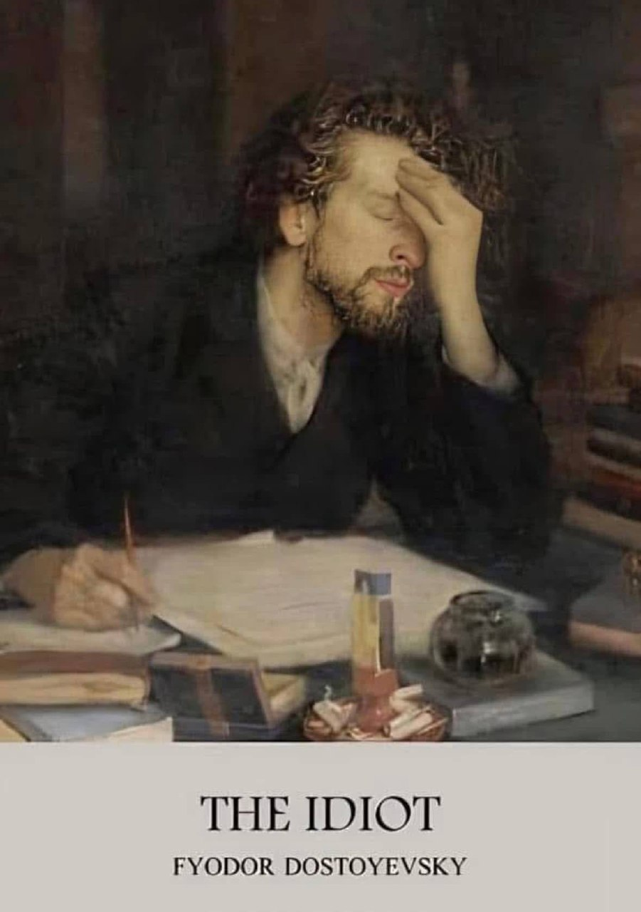

Book Reviews
The Brothers Karamazov
Show Review
Review Highlights:
- Deep philosophical questions (faith, doubt, justice, free will)
- Complex, fully human characters
- Big, emotional family drama with moral stakes
- Classic Russian literature with weight and depth
Crime and Punishment
Show Review
Review Highlights:
- Explores guilt, redemption, and moral philosophy
- Intense psychological depth
- A gripping story with a tortured protagonist
- Another Dostoevsky masterpiece

The Idiot
Show Review
Review Highlights:
- A profound exploration of goodness and innocence in a corrupt world
- Prince Myshkin is a rare literary figure: a truly kind, Christ-like character
- Themes include madness, society’s cruelty, spiritual purity vs. moral decay
- A tragic and philosophical novel about love, alienation, and human failure
- Complex, emotionally volatile characters and intricate relationships
One of Dostoyevsky’s most challenging and introspective works